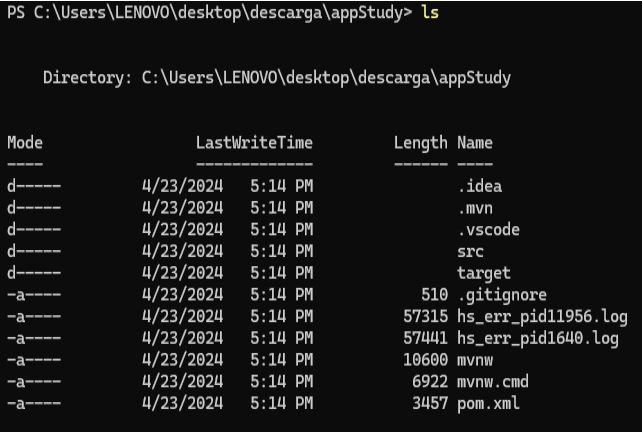
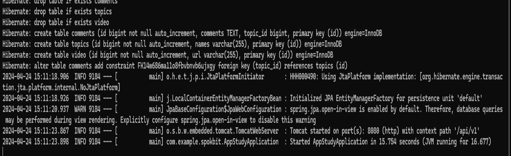
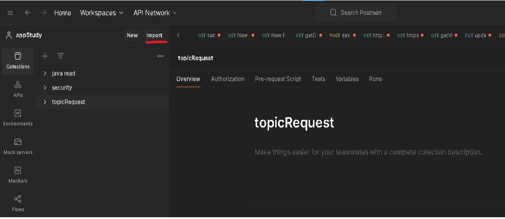

Soy un programador backend especializado en Java.
He creado una API para la gestión de temas de estudio y notas asociadas.
Esta aplicación permite crear temas de estudio y almacenar notas relacionadas para un aprendizaje más efectivo.
Además de la funcionalidad principal, mi aplicación incluye características adicionales para mejorar la experiencia de estudio.
Cuenta con un cronómetro integrado y una técnica de Pomodoro para ayudar a administrar el tiempo de estudio de manera efectiva.
También ofrece una sección dedicada para reproducir videos de YouTube con videos de lofi,
diseñada para crear un ambiente propicio para la concentración y el enfoque.
Aunque mi experiencia en frontend es muy limitada, he desarrollado una interfaz de usuario básica utilizando HTML,
CSS y JavaScript para interactuar con el backend de la aplicación.
Estoy comprometido con la implementación de las mejores prácticas de desarrollo de software,
por lo cual he aplicado los principios SOLID, como darles una sola responsabilidad a cada clase,
el principio de segregación de interfaces y el principio de inversión de dependencias.
También realicé sus correspondientes pruebas unitarias con JUnit y Mockito.
Del mismo modo, utilicé Postman para realizar más pruebas.
Más detalles: La API le seguire añadiendo más características y
otros detalles que he anotado en Trello. Donde tengo que agregar mucho trabajo es en el frontend
para aplicar buenas prácticas
y usar una librería como React o un framework como Angular.
Tecnologías utilizadas para la API: MySQL, Java 17, Spring Boot, JUnit,
Mockito, JPA, Git, Lombok.
Tecnologías utilizadas para el Frontend: HTML, CSS, JavaScript.
Abre Windows PowerShell, luego copia el enlace y pégalo
git clone git@github.com:alexanderJava8/appStudy.git
Dirígete hasta la raíz del repositorio descargado, usa el comando cd.
Si ya estás en la raíz de la carpeta, usa el comando ls; se tiene que ver parecido a esto
Ve a la carpeta "target" con este comando
cd target
Ahora, corre la aplicación con este comando.
java -jar appStudy-1.0.0.jar
Si todo salió bien, la API ya está en ejecución
La API debe estar en ejecución, sino, haz los pasos anteriores.
Descargar el JSON de Postman con toda la configuración.
JSON Postman
Importa el JSON desde la pestaña 'Import' de la izquierda de Postman.
Si todo salió bien, ahora puedes probar la API.
La API debe estar en ejecución.
Abre Windows PowerShell, luego copia el enlace y pégalo.
git clone git@github.com:alexanderJava8/appStudyF.git
Abre el proyecto con Visual Studio y usa la extensión Live Server.